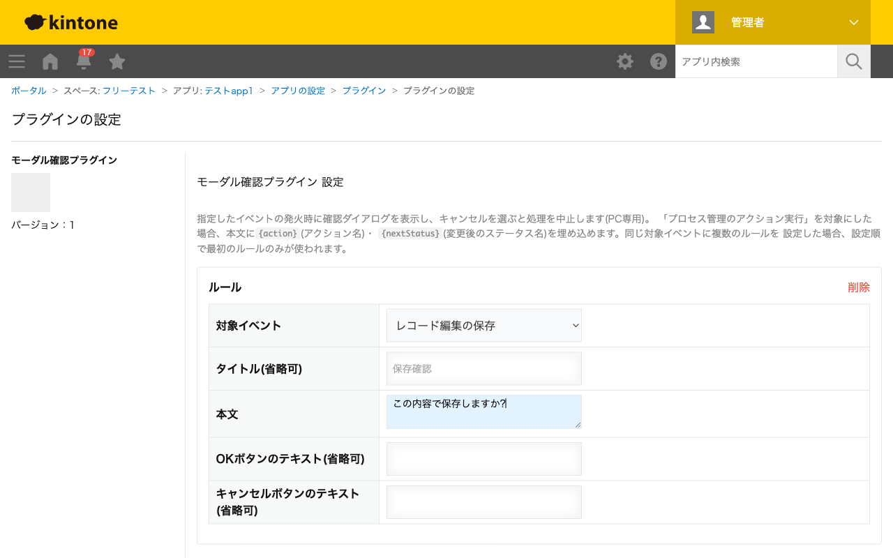

GovAppsプラグイン 安全性を確認できる無料kintoneプラグイン集
レコード追加・編集の保存、レコード一覧からの削除、プロセス管理のアクション実行のいずれかが行われる ときに確認ダイアログ(モバイルでは確認ボトムシート)を表示し、キャンセルを選ぶとその処理を中止します。 「レコード一覧からの削除」のみkintoneにモバイル版のイベントが存在しないためPC専用です。ダイアログの タイトル・本文・OK/キャンセルボタンのテキストをルールごとに設定できます。
レコード一覧からの削除操作に確認ルールを設定しておくと、「本当に削除しますか?」といったダイアログが表示され、キャンセルを選べば削除は行われません。誤操作による削除事故を防ぎたい台帳・マスタ系アプリに向いています。
プロセス管理のアクション実行を対象にしたルールでは、ダイアログ本文に{action}(実行したアクション名)・{nextStatus}(変更後のステータス名)を埋め込めます。「『承認』を実行し、ステータスを『承認済み』に変更します。よろしいですか?」のように、実際の値を含めた確認文言を表示できます。
レコード追加・編集の保存を対象にしたルールを設定すれば、保存ボタンを押した際に「この内容で保存しますか?」といった確認を挟めます。ボタンのテキストを「保存する」「やめる」のように業務に合わせて変更することもできます。
同じ対象イベントに複数のルールを設定した場合、設定順で最初のルールのみが使われます。「レコード一覧からの削除」のみkintoneにモバイル版のイベントが存在しないためPC専用で、それ以外はPC・モバイルどちらでも動作します。REST API経由でのレコード保存・削除・ステータス更新はこの確認ダイアログを経由しません。
kintoneセキュアコーディングガイドラインに沿って実装時にチェックしています。特に重要な点は次のとおりです。
kintone.showConfirmDialog()/kintone.mobile.showConfirmBottomSheet())のみで表示しており、外部サーバーへの通信・外部ライブラリは一切使用していません。{action}/{nextStatus})は文字列の置換のみで、DOM操作やeval等コード実行を伴いません。置換元の値はkintone自身が生成するプロセス管理のアクション名・ステータス名であり、レコード編集者の自由入力ではありません。textContentまたは<template>要素のcloneNodeで行っており、innerHTMLへの外部由来文字列の埋め込みはありません。詳細な確認項目・確認日は下記GitHubのチェックリストに全項目を掲載しています。

このプラグインはREST APIを一切実行しません。確認ダイアログの表示・キャンセル処理は
kintone.showConfirmDialog()等のJavaScript APIのみで完結し、API実行数制限に
影響することはありません。